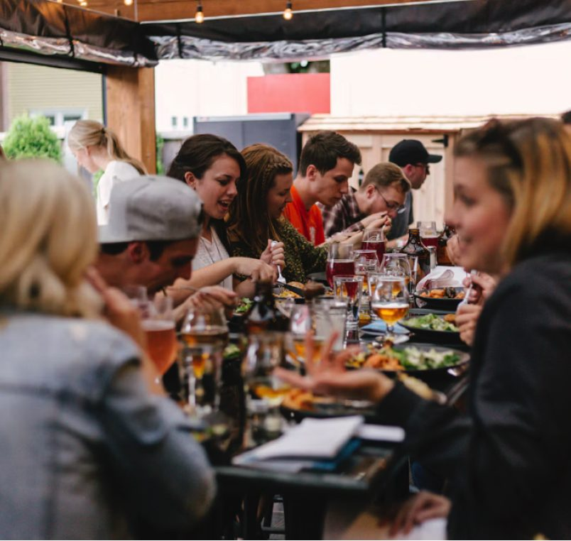
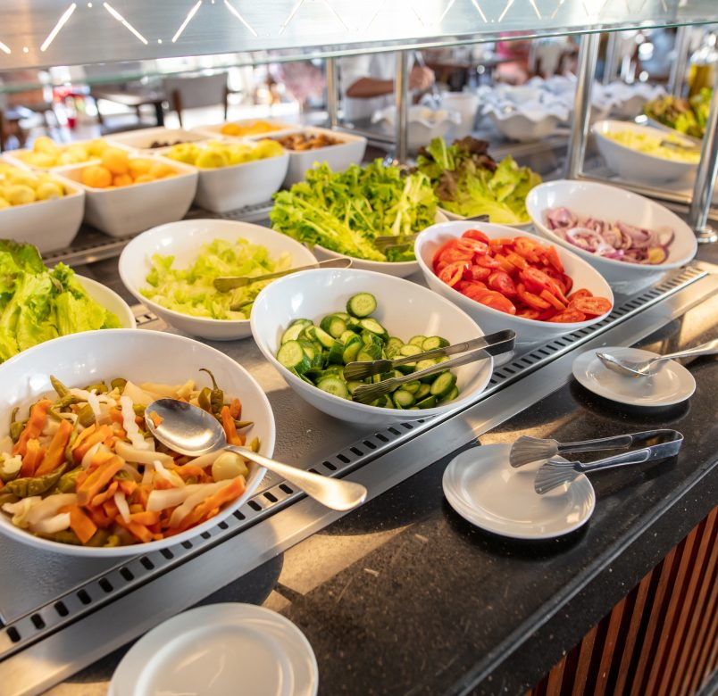
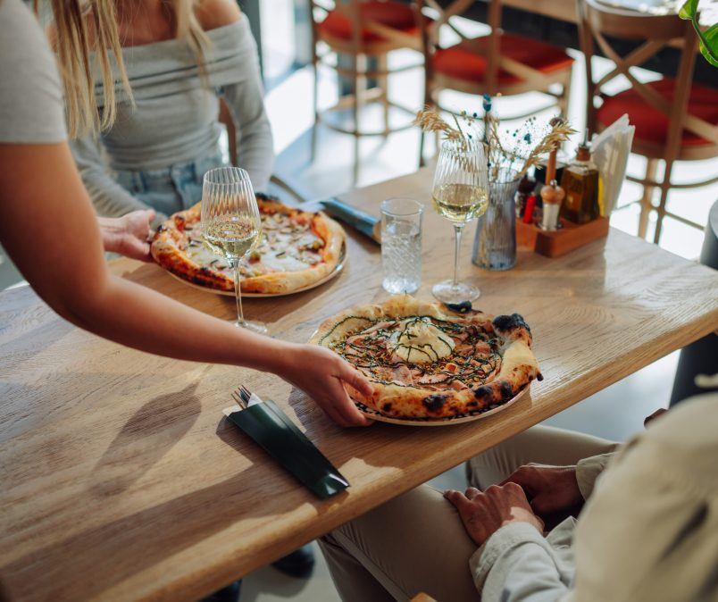

Por que o cliente escolheu seu restaurante hoje?
Entender o motivo da visita é o segredo para ajustar o serviço, proteger as margens e construir um negócio recorrente.
#75 out. 26
Por: Carol Belisse

É hora do almoço e o cliente tem pouco tempo; no sábado à noite, quer encontrar os amigos pra se divertir; em outro dia, vê um prato no Instagram e decide experimentá-lo. O lugar escolhido pode mudar em cada uma dessas situações, e os motivos também.
Muitos donos de restaurante organizam o negócio a partir de categorias como “pizzaria”, “hamburgueria” ou “cafeteria”. Para o cliente, porém, a escolha também passa pelo que ele procura naquele momento: quanto pode gastar, quanto tempo tem, com quem está e qual é a importância daquela refeição.
Entender como esses fatores se combinam ajuda o empreendedor a avaliar cardápio, comunicação e operação para diferentes ocasiões, sem perder de vista aquilo que sustenta a escolha do cliente: a qualidade do que é servido.

A ocasião vem antes
da escolha
A categoria da comida continua fazendo parte do processo de decisão. Quem busca uma pizza já reduziu consideravelmente a sua lista. No entanto, mesmo quando o cliente busca um tipo específico de gastronomia, o peso dos critérios de escolha varia conforme a ocasião.
Uma pesquisa realizada pela agência Tanjerin em maio de 2026 aponta que a qualidade da refeição, o prazer e o conforto são os fatores principais fatores. Quando o consumidor decide sair de casa, surgem razões fortemente ligadas ao convívio: celebrações, momentos de descanso e reuniões com amigos ou familiares.
Dois clientes podem pedir exatamente o mesmo prato em mesas vizinhas, mas terem chegado ao restaurante por caminhos e expectativas totalmente diferentes.
Por que comemos fora?
Ao analisar múltiplas respostas, os entrevistados apontaram suas
principais motivações:
- 55%Celebrações e datas especiais
- 52%Descanso ou pausa na rotina
- 48%Tempo com familiares
- 45%Encontros e convívio social
E o que pesa na escolha do restaurante?
- 56%Comida de qualidade
- 54%Prazer na experiência
- 43%Conforto do ambiente
Fonte: Tanjerin — “O que os brasileiros esperam da tecnologia em sua jornada alimentar”, 2026. Pesquisa com 1.312 brasileiros de todas as regiões do país.
Para o empresário e chef Beto Madalosso, a qualidade do prato vem em primeiro lugar na tomada de decisão. Contudo, quando a ocasião envolve reunir um grupo grande, a previsibilidade da refeição se torna decisiva para atender a todos.
“Quando eu pego um grupo grande, preciso que atenda e satisfaça a maioria dos meus convidados. Então são comidas normalmente mais populares, como um restaurante italiano, onde todo mundo já está habituado”, comenta.
Por outro lado, em saídas individuais ou em duplas, o desejo gastronômico ganha protagonismo e a busca pelo ambiente ideal atua como o grande diferencial competitivo do estabelecimento.
“Se a pessoa quer desfrutar de algum tipo de comida, a comida está em primeiro lugar e o ambiente em segundo. Aquele que consegue oferecer uma comida boa e ainda oferecer um bom ambiente consegue se destacar, porque está dando um diferencial da experiência.”
Beto Madalosso, chef e empresário
Da descoberta à
recorrência
A ocasião ajuda a definir o que o cliente procura. Mas, antes da escolha, o restaurante precisa entrar no seu radar.
A jornada da fome muitas vezes começa longe da mesa. Um prato atraente surge na tela do celular, é compartilhado em um aplicativo de mensagens e transforma-se em um convite.
Um levantamento da Brazil Panels & Behavior Insights revela que 70,2% dos entrevistados já decidiram visitar um restaurante após visualizá-lo no Instagram. Entre as pessoas que usam o aplicativo como guia gastronômico, 69% realizam buscas ativas por locais para comer.
Do feed à mesa
70,2%
já visitaram um restaurante por causa do Instagram.
O que desperta atenção:
38,2%
Fotos de pratos
23,5%
Vídeos de preparo
O que garante satisfação no salão:
38,2%
Qualidade da comida
23,0%
Preço justo
17,1%
Atendimento
Fonte: Brazil Panels & Behavior Insights

A atração, no entanto, explica a chegada. Mas não explica, sozinha, a volta.
Embora a presença digital seja importante para gerar atração, Beto faz um alerta sobre a necessidade de focar na retenção do público que já conhece a casa.
Ao avaliar o papel do Instagram e a fidelidade do público, ele destaca: “a rede social precisa ser um estímulo de consumo, mas as pessoas normalmente voltam em lugares que já conhecem. A recorrência nos meus restaurantes representa de 70% a 80% dos clientes. O consumidor é recorrente”.
O empresário também reforça a importância da proximidade com o público. “A comunicação na rede social funciona muito quando tem essa personalidade, especialmente quando é o dono falando. Os clientes adoram saber que o dono está presente, isso passa uma segurança”.
Nem toda ocasião precisa ser atendida
Reconhecer diferentes ocasiões de consumo não significa tentar atender a todas elas. Tentando aproveitar diferentes ocasiões de consumo no mesmo espaço, muitos restaurantes dividem a operação entre refeições rápidas durante o dia e serviços mais elaborados à noite.
Por ser proprietário de diversos empreendimentos de sucesso em Curitiba como o Madá Pizza e Vinho, Carlo Ristorante, Sambiquira e o Uma Ova, Beto Madalosso vivencia essa dinâmica na prática ao gerenciar um formato híbrido, mas alerta para o aumento da complexidade operacional:
“Abraçar muitos formatos para encher a casa é complexo porque desconfigura o negócio. Eu tenho buffet no almoço para atender o pessoal do prédio e à noite é à la carte. São dois negócios dentro de um. Funciona bem, mas a gente se quebra para fazer bem-feito”.
Descubra quais ocasiões já existem dentro da sua operação
Antes de criar uma nova ocasião de consumo, o próprio comportamento dos clientes pode indicar quais demandas já existem dentro do restaurante.
A sensibilidade para alterar a oferta também exige observar o comportamento do cliente diretamente na mesa. Como exemplo, o empresário cita a mudança feita em uma de suas casas, o restaurante Uma Ova, especializado em frutos do mar.
“O sinal de mexer no cardápio é quando o movimento está fraco. Eu observo muito a reação do cliente quando abre o cardápio. No Uma Ova, estávamos tentando fazer um perfil só de petisco, mas comecei a notar que os clientes queriam refeições. Colocamos pratos e a reação ao pegar o cardápio ficou muito mais confortável”.
Antes de criar um novo combo ou alterar os horários do seu estabelecimento, é fundamental buscar evidências reais de demanda.
A análise deve começar no histórico do sistema de vendas. Em seguida, observe o comportamento do público no salão em cada período.
A interação direta com o cliente complementa a análise. Perguntas simples durante o atendimento revelam motivos de compra que não ficam registrados no relatório de vendas.
5 pistas que estão no seu caixa
- 1
Horário
Quais são os picos de faturamento e quando o tíquete médio individual aumenta?
- 2
Comanda
Quais produtos ou acompanhamentos costumam ser pedidos juntos?
- 3
Perfil de mesa
Qual é a proporção entre clientes individuais, casais e grupos em cada turno?
- 4
Origem do cliente
A visita aconteceu por localização, recomendação, busca ativa ou redes sociais?
- 5
Comportamento
O cliente que vem por uma promoção consome outros itens e retorna em datas normais?
Escolha quais oportunidades vale a pena testar
Identificar uma demanda é o primeiro filtro. O passo seguinte é descobrir se vale a pena transformá-la em oferta.
Reconhecer uma ocasião de consumo não exige a reformulação completa do restaurante. O passo essencial é avaliar se a novidade possui demanda sustentável, se a cozinha comporta a produção sem perder qualidade e se a margem de lucro permanece saudável.
Um item com alta atração pode ter impacto negativo no resultado se sobrecarregar a equipe ou apenas substituir a venda de um produto mais lucrativo. Por outro lado, uma boa oferta voltada para o momento certo pode ocupar horários de menor movimento e apresentar a casa para novos perfis de público.
Vale a pena criar uma nova oferta?
- Existe demanda real? Há volume suficiente de clientes buscando essa solução?
- A operação suporta? A equipe de cozinha e salão mantém o padrão de atendimento?
- A conta fecha com margem? O preço cobrado cobre todos os custos operacionais e deixa lucro?
- Aumenta o tíquete? A oferta estimula a compra de bebidas, entradas ou sobremesas?
- Gera recorrência? O cliente encontra motivos para retornar sem depender de descontos?
FÓRMULA DE SUCESSO
ocasião identificada + operação preparada +
margem saudável =
teste validado.